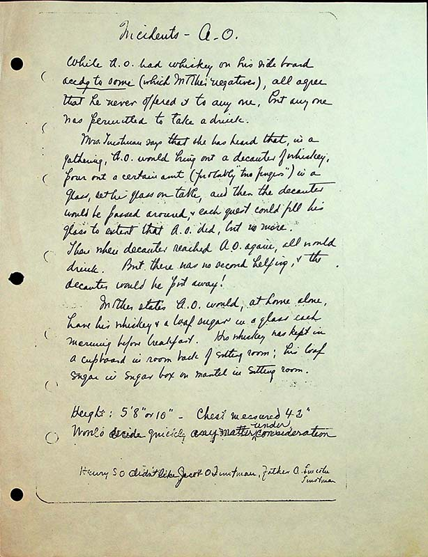

While A.O. had whiskey on his side board, according to some (which Mother negatives), all agree that he never offered it to anyone, but anyone was permitted to take a drink.
Mrs Tinstman says that she ahs heard that in a gathering, A.O. would bring out a decanter of whiskey, pout out a certain amt [sic] (probably “two fingers”) in a glass, set his glass on table and then the decanter would be passed around, & each guest could fill his glass to extent that A.O. did, but no more. Then when decanter reached A.O. again, all would drink. But there was no second helping, & the decanter would be put away!
Mother states A.O. would, at home, alone, have his whiskey & a loaf sugar in a glass each morning before breakfast. His whiskey was kept in a cupboard in his room back of sitting room/ his loaf sugar in sugar box on mantel in sitting room.
Height: 5’8” or 10”- chest measured 42”
Would decide quickly any matter ^ under consideration
Henry S.O. didn’t like Jacob O Tinstman, father A.L. mother Tinstman